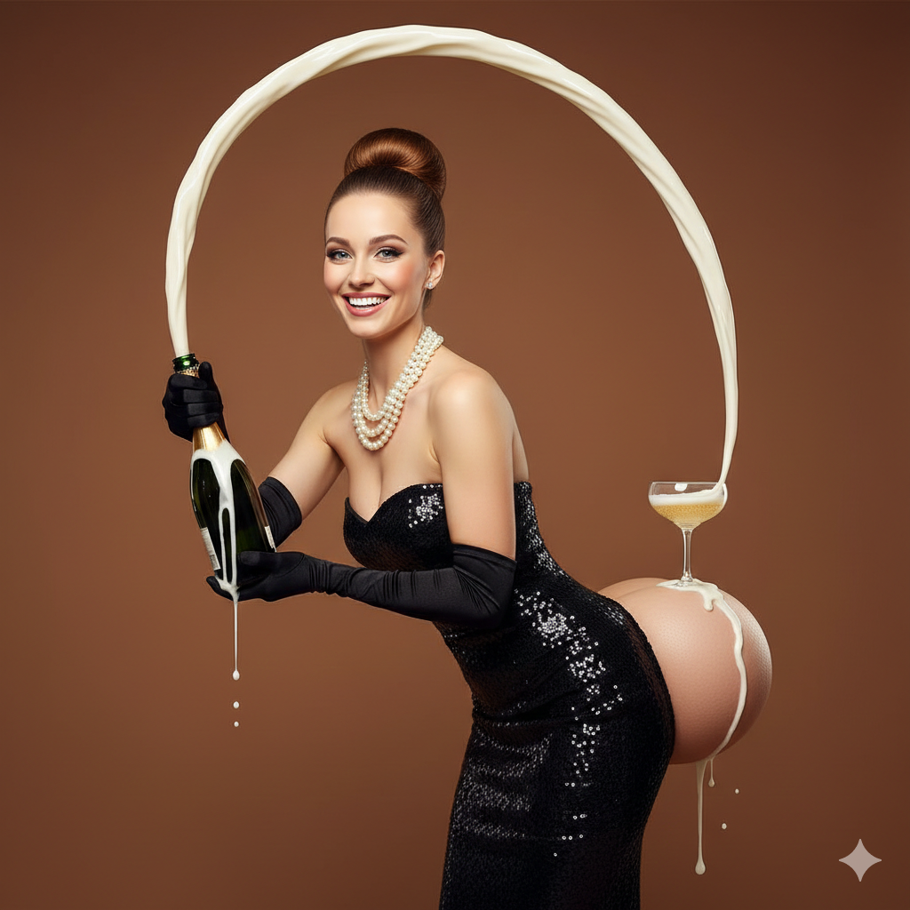
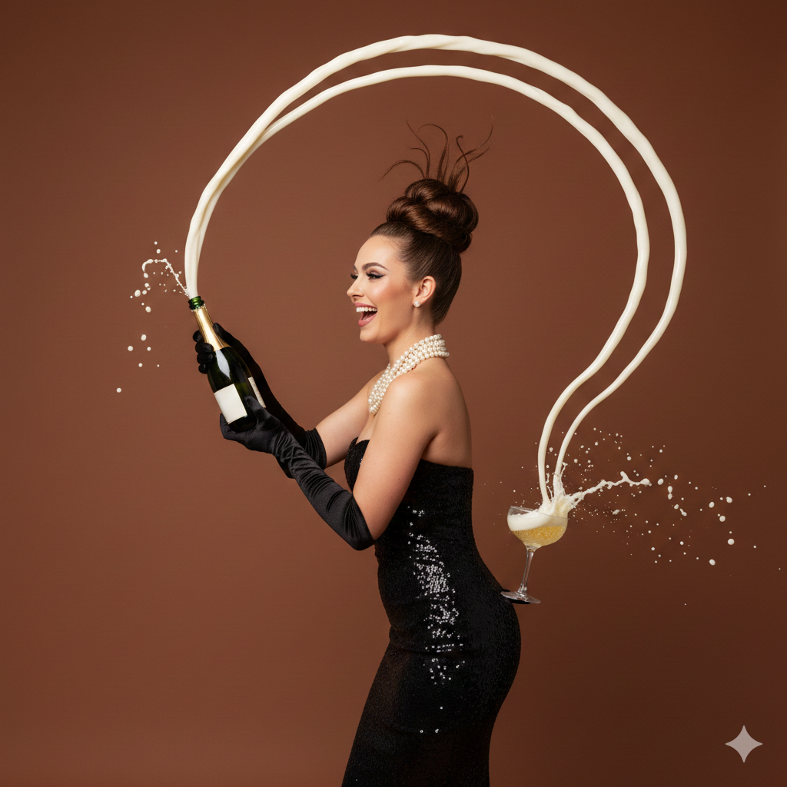

This image depicts a picture of a woman with an open bottle of champagne spewing upwards, bending 2 feet over her head and flowing nicely into a glass that is resting on her butt. She is wearing black gloves that are being overflown by the champagne from the bottle she is holding. She has a full neck of pearls, her hair is in a bun with a big smile on her face, but not as big as her butt which is pronounced beyond just what her forward leaning posture could accomplish. Enough that the sizeable glass of champagne is resting on it without leaning but letting the overflow run down her dress.
There is clear manipulation in the photo in multiple areas. First, the flow of champagne over her head is expressed so that the peak of its arc is two feet over her head. Also, her teeth are very white and there is no blemish anywhere on her skin, including her face. And the clearest point of manipulation is her butt which is extended far enough from her torso that the glass of champagne is resting on it as stable as it would on a table.
The image shows a studio photograph of a woman posed against a smooth, warm brown backdrop. The composition is clean and minimal, with no visible props other than a champagne bottle and glass. She is standing in profile, turned slightly toward the camera, smiling with an open, expressive look. Her hair is styled in a high, sculptural topknot bun, with a few strands fanning upward for dramatic effect. She wears glamorous makeup, including defined brows, contoured cheeks, and glossy lips.
Her outfit is a strapless, form-fitting black dress made of a shiny, sequined or patent-like material that reflects light. The dress accentuates her silhouette and curves. She is also wearing long black gloves that extend above her elbows, along with layered pearl necklaces wrapped around her neck, giving a vintage, glamorous feel.
In her hands, she holds a green champagne bottle angled upward. Champagne is spraying forcefully out of the bottle in a dramatic arc that rises high above her head before curving downward. The stream is captured mid-motion, creating white, foamy trails in the air. Droplets are visible falling from the bottle.
Behind her, resting on her lower back, is a coupe-style champagne glass. The arcing spray lands neatly into the glass, splashing and bubbling upon impact. The lighting is bright and even, highlighting the shine of the dress and gloves while casting a soft shadow on the backdrop. The overall image is theatrical, playful, and highly stylized.
Honestly, the two images were pretty similar besides the part regarding her butt. It seemed that because I realized which part was photoshopped, I emphasized it in my description. Where there was a clear divergence was that her dress didn’t cover her butt even though I never said it was exposed in my description. Why? I’m not sure.
Besides that, mine was more accurate on the state of the champagne glass and about the same in terms of the flow over her head independent of the fact that the AI thought it was in two streams. In terms of what she was wearing and how she was dressed, they seemed pretty equal although the AI went into more detail with more definitive language when describing it.
What this reveals in regards to perception and construction of meaning is that the gap between being able to deeply describe something presented visually and the AI’s descriptive ability is noticeable. I seem to be more focused on describing what I see as false more than anything else. Also, because AI removed the dress from her backside, it seems like it formulated the image as more sexual than it actually was. This suggests it may correlate certain body parts with sexuality and produce results accordingly, reflecting patterns it has learned from previous data.